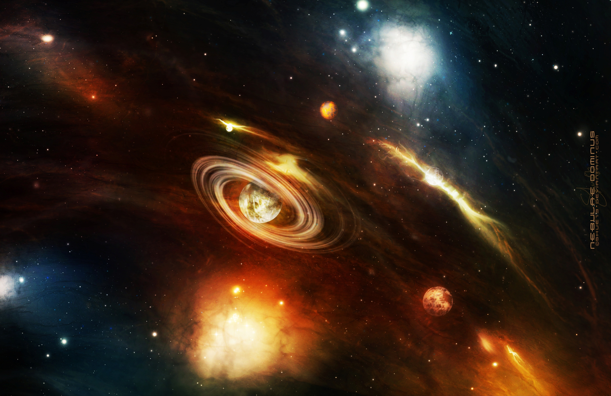
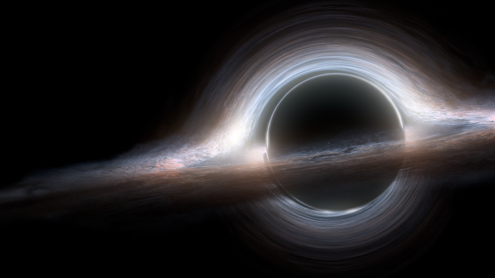
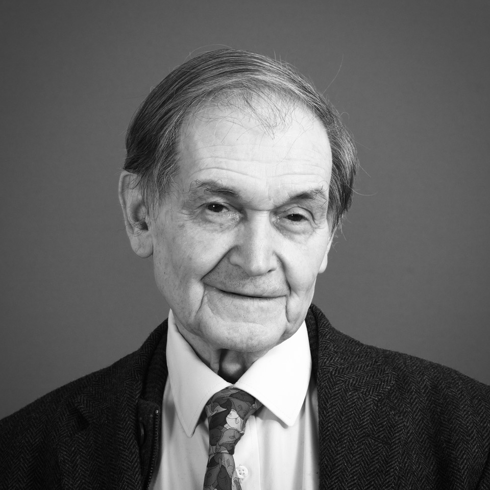

Модель конформной циклической космологии (англ. conformal cyclic cosmology или CCC) предполагает, что Вселенная проходит через повторяющиеся циклы большого взрыва и последующих расширений. Общая идея состоит в том, что "большой взрыв" был не началом Вселенной, а скорее переходной фазой. Его разработал физик-теоретик и математик Роджер Пенроуз. В качестве основы для своей модели Пенроуз использовал множественные метрические последовательности FLRW (Фридмана – Лемэтра – Робертсона – Уокера). Он утверждал, что конформная граница одной последовательности FLRW может быть присоединена к границе другой.
Метрика FLRW - это наиболее близкое приближение к природе Вселенной и часть модели Лямбда-CDM. Каждая последовательность начинается с большого взрыва, за которым следует инфляция и последующее расширение. Циклическая или осциллирующая модель, в которой Вселенная повторяется снова и снова в неопределенном цикле, впервые оказалась в центре внимания в 1930-х годах, когда Альберт Эйнштейн исследовал идею «вечной Вселенной. Он считал, что по достижении определенной точки Вселенная начинает коллапсировать и заканчивается Большим хрустом перед тем, как пройти через Большой отскок. Прямо сейчас существует четыре различных варианта циклической модели Вселенной, одна из которых - конформная циклическая космология.
Мираж четырехмерной черной дырыИсследование, проведенное группой исследователей в 2013 году, предположило, что наша Вселенная могла возникнуть из обломков, выброшенных из коллапсировавшей четырехмерной звезды или черной дыры. По мнению космологов, участвовавших в исследовании, одно из ограничений теории Большого взрыва - объяснение температурного равновесия, обнаруженного во Вселенной. Хотя большинство ученых согласны с тем, что инфляционная теория дает адекватное объяснение того, как маленький участок с однородной температурой быстро расширится и превратится во Вселенную, которую мы наблюдаем сегодня, группа сочла это неправдоподобным в силу хаотичной природы Большого взрыва.
Эти четырехмерные черные дыры будут иметь трехмерный горизонт событий (точно так же, как трехмерные имеют двухмерный горизонт событий), который они назвали "гиперсферой". Модель "четырехмерной черной дыры" космоса действительно объясняет, почему температура во Вселенной почти равномерна. Она также может дать ценную информацию о том, что именно спровоцировало космическую инфляцию через несколько секунд после ее возникновения. Однако недавнее наблюдение, проведенное спутником Planck ЕКА, выявило небольшие вариации температуры космического микроволнового фона (CMB). Эти спутниковые показания отличаются от предложенной модели примерно на четыре процента.
Космология плазмы (или теория плазменной Вселенной) предполагает, что электромагнитные силы и плазма играют очень важную роль во Вселенной вместо гравитации. Хотя у этого подхода много разных вариантов, основная идея остается той же; каждое астрономическое тело, включая Солнце, звезды и галактики, является результатом какого-либо электрического процесса. Первая выдающаяся теория плазменной Вселенной была предложена лауреатом Нобелевской премии Ханнесом Альвеном в конце 1960-х годов. Позже к нему присоединился шведский физик-теоретик Оскар Клейн для разработки модели Альфвена – Клейна.
Модель построена на предположении, что Вселенная поддерживает равные количества материи и антивещества (это не так, согласно современной физике элементарных частиц). Границы этих двух областей отмечены космическими электромагнитными полями. Таким образом, взаимодействие между ними приведет к образованию плазмы, которую Альфвен назвал «амбиплазмой». Согласно теории, такая плазма должна образовывать большие участки вещества и антивещества по всей Вселенной. Кроме того, было высказано предположение, что наше текущее местоположение в космосе должно быть в той части, где материи гораздо больше, чем антивещества, - таким образом решается проблема асимметрии материи и антивещества.
  
Десятилетия математического моделирования и исследований привели космологов к обоснованному выводу, что наша Вселенная возникла из одной точки с бесконечной плотностью и температурой, называемой сингулярностью. Последующее расширение Космоса позволило ему остыть, что привело к образованию галактик, звезд и других астрономических объектов. Однако, как мы знаем, стандартная модель Большого взрыва не осталась незамеченной, и одна из таких сложных теорий была предложена Кристофом Веттерихом, профессором Гейдельбергского университета в Германии. Веттерих утверждал, что Вселенная, которую мы знаем сегодня, на самом деле могла начаться как холодная и разреженная, пробудившаяся от долгого замораживания. Со временем фундаментальные частицы в ранней Вселенной стали тяжелее, а гравитационная постоянная уменьшилась. Кроме того, он объяснил, что если массы частиц увеличиваются, излучение из ранней Вселенной может заставить пространство казаться более горячим и удаляться друг от друга, даже если это не так. Основная идея космической модели Медленного Замораживания Веттериха состоит в том, что у Вселенной нет ни начала, ни будущего.
Вместо горячего Большого взрыва теория защищает холодную и медленно эволюционирующую Вселенную. Согласно Веттериху, теория объясняет флуктуации плотности в ранней Вселенной (первичные флуктуации) и то, почему в нашем нынешнем космосе преобладает темная энергия.
Стационарная модель утверждает, что наблюдаемая Вселенная остается неизменной в любом месте и в любое время. Во Вселенной, которая вечно расширяется, материя непрерывно создается, чтобы заполнить пространство. Согласно модели, галактики и другие крупные астрономические тела рядом с нами должны казаться похожими на те, что находятся далеко. Однако Большой взрыв говорит нам, что далекие галактики должны выглядеть моложе, чем находящиеся в непосредственной близости (при наблюдении с Земли), поскольку свету требуется гораздо больше времени, чтобы добраться до нас. Идея стационарного состояния была впервые предложена в 1948 году космологами Германом Бонди, Фредом Хойлом и Томасом Голдом. Она исходила из совершенного космологического принципа, который сам по себе утверждает, что Вселенная, где бы ты ни смотрел, одинакова, и она всегда будет одинаковой. Теория стационарных состояний получила широкую популярность в начале и середине XX века. Однако к 1960-м годам она была в основном отвергнута научным сообществом в пользу Большого взрыва после открытия космического микроволнового фона.